Catálogo · teléfono 390
Tarjetas de 384→~300px: precio y botón entran en la primera pantalla; orden al lado del título; pastilla «Recomendado» fuera de la foto.
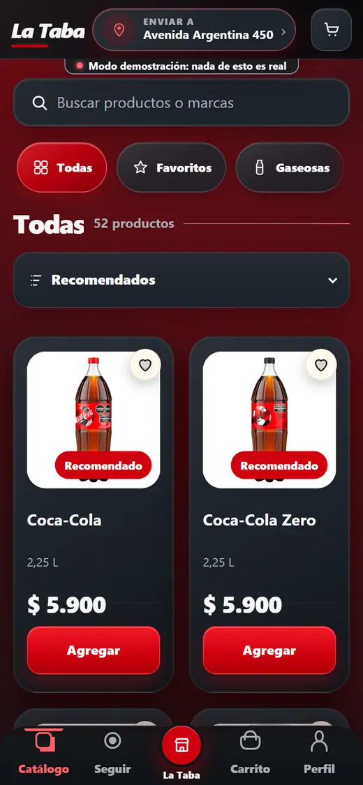
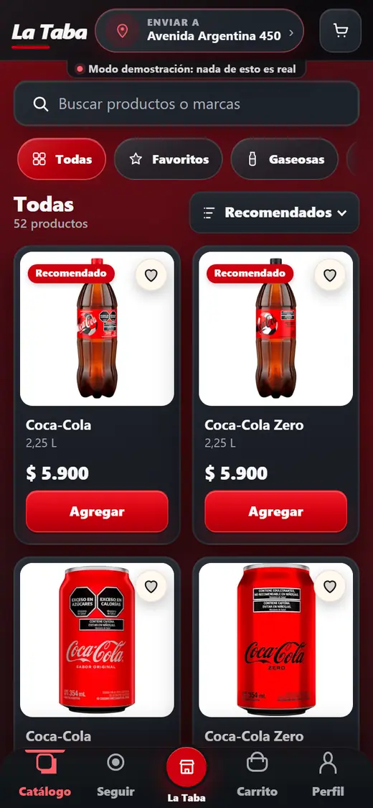
Historias · teléfono 390
Pantalla completa 9:16 con la pieza entera; título, acción y navegación sobre degradado; tocar izquierda/derecha navega.
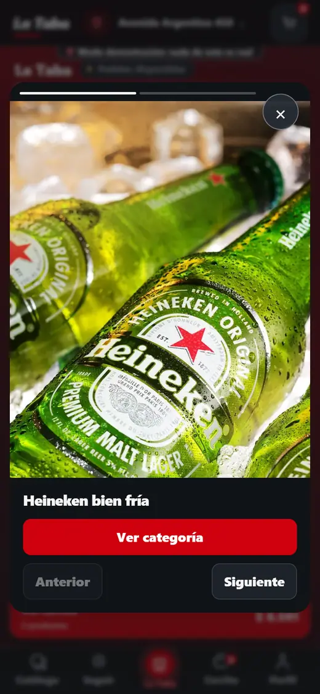
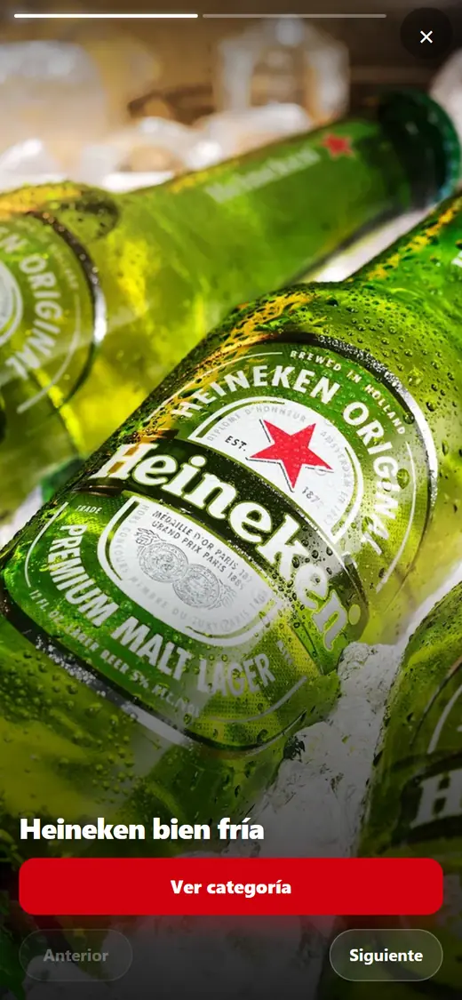
Historias · escritorio 1280
Marco 9:16 centrado en lugar de tarjeta con la imagen recortada a 4:5.
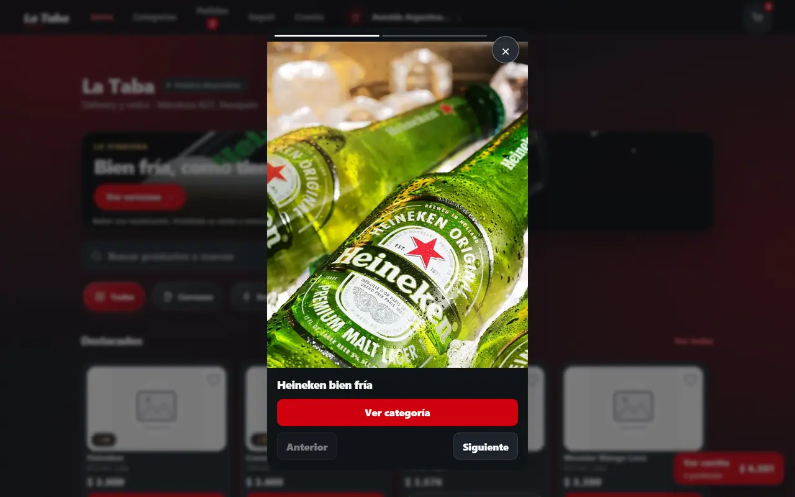
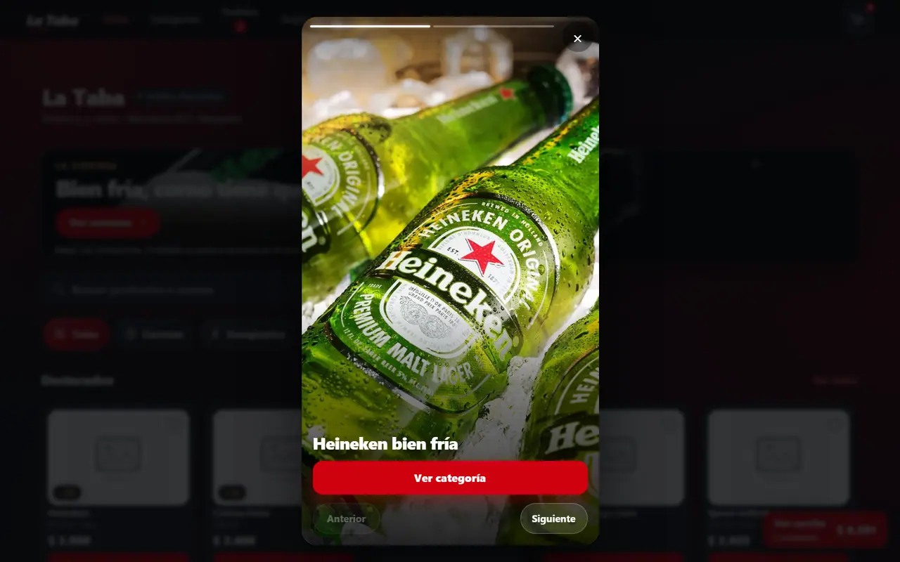
Catálogo · escritorio 1280
Mismo presupuesto de columnas (tarjeta ≥250px), tarjetas más compactas: foto cuadrada a ras, nombre/presentación juntos, pastilla fuera de la foto; entran más productos por pantalla.
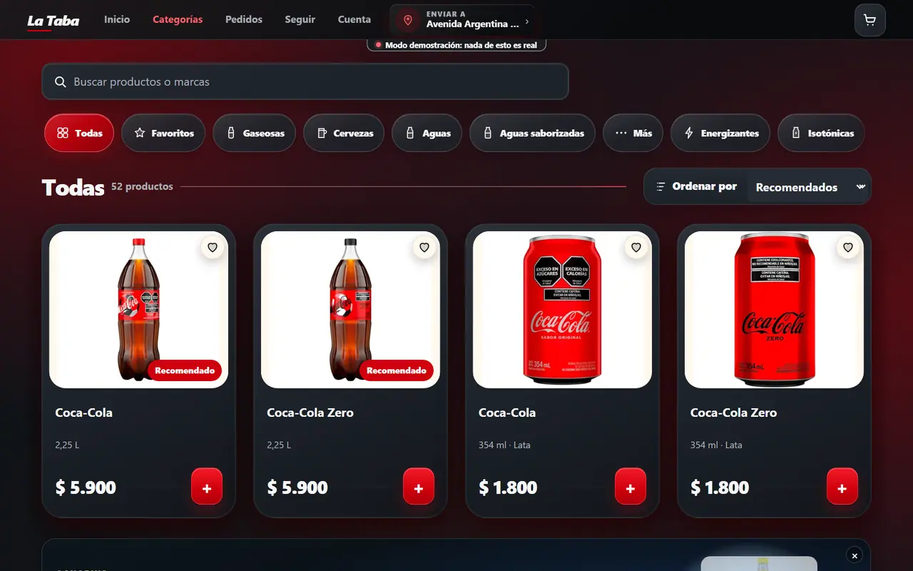
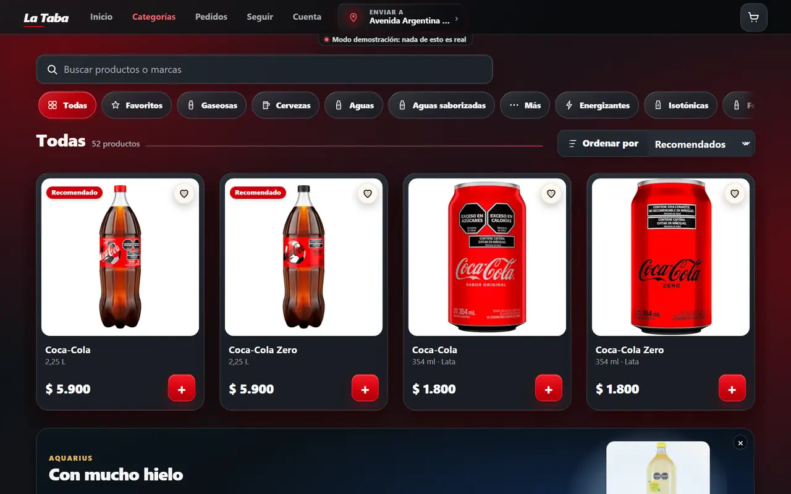
Carrito · teléfono 390
Líneas en dos renglones (foto · nombre/cantidad · importe), mínimo alcanzado sin barra llena.
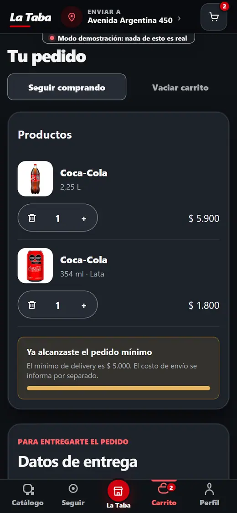
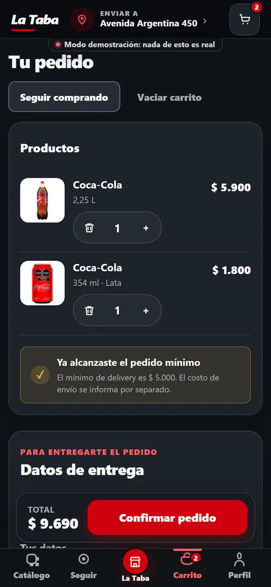
Entrega · teléfono 390
Delivery / Retiro como control segmentado: la opción elegida se ve elegida.
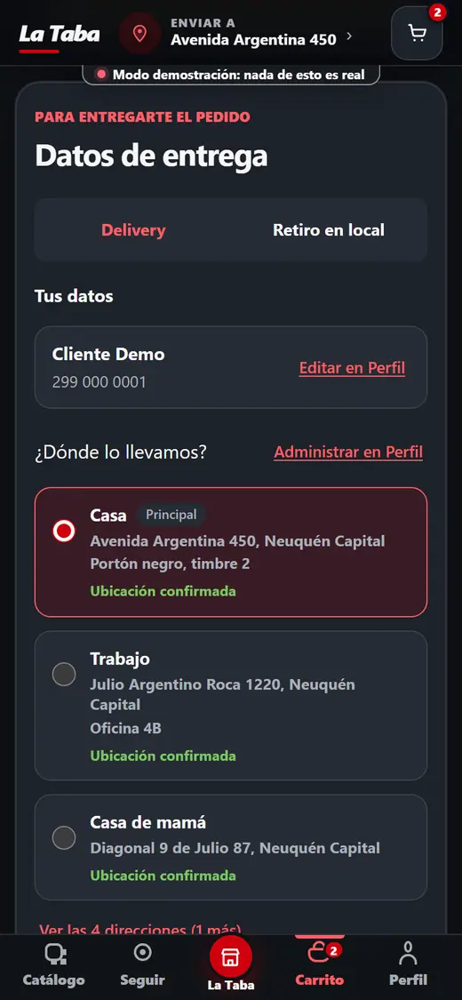
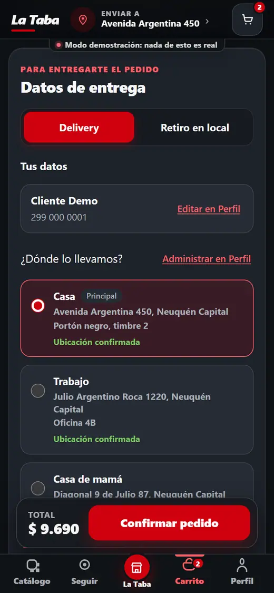
Carrito y entrega · escritorio 1280
El resumen de productos acompaña el scroll del formulario.
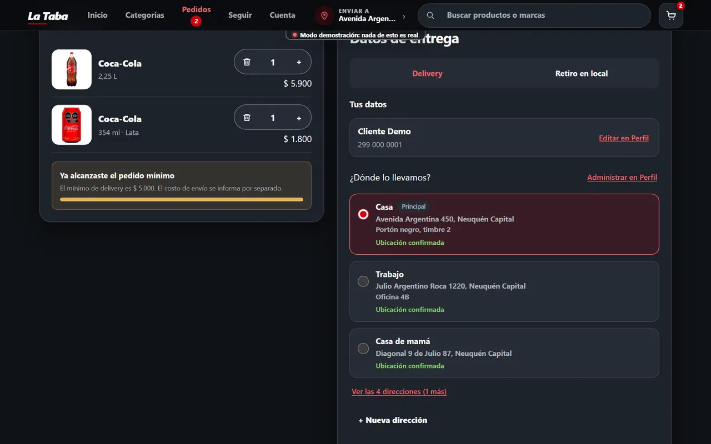
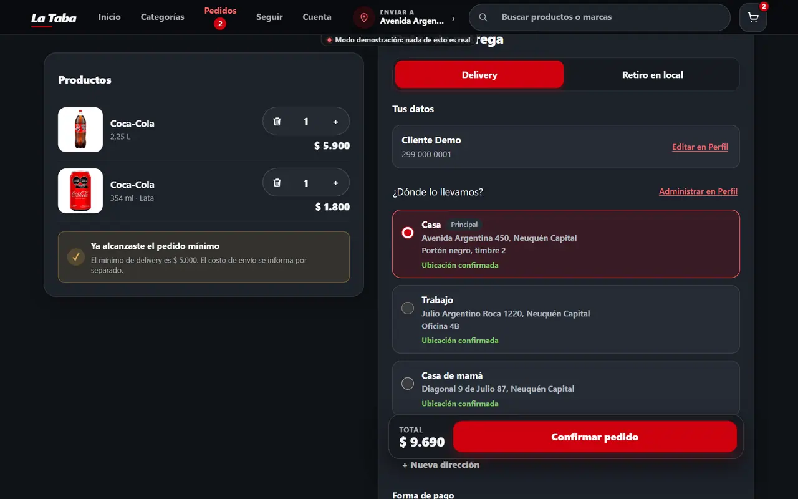
Ficha · teléfono 390
Disponibilidad como pastilla alineada al precio; observación en un renglón.
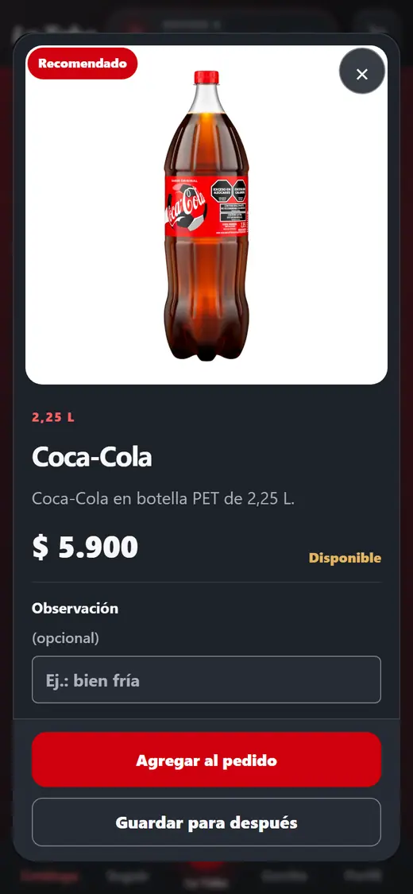
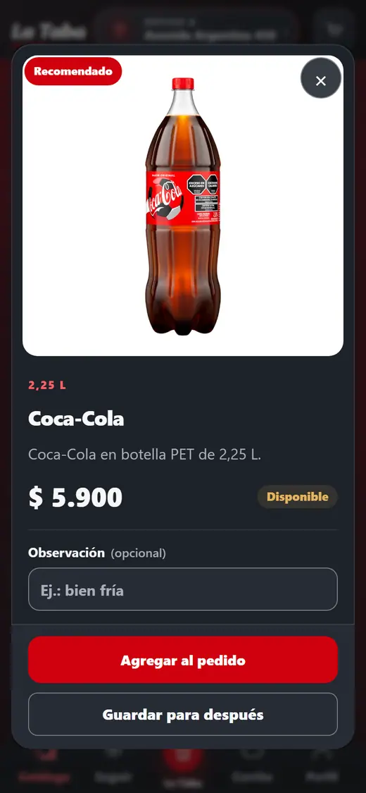
Inicio · escritorio 1280 (página completa)
Home a todo el ancho útil, rieles de 5 tarjetas parejas, combo con ancho de tarjeta.
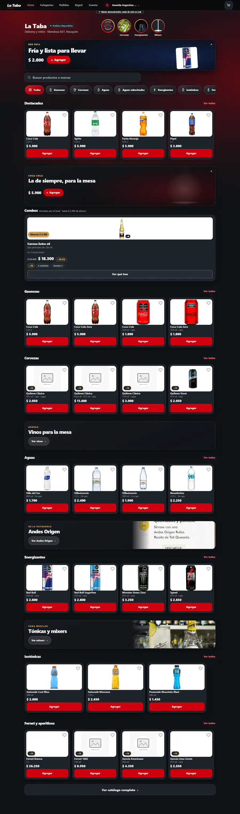
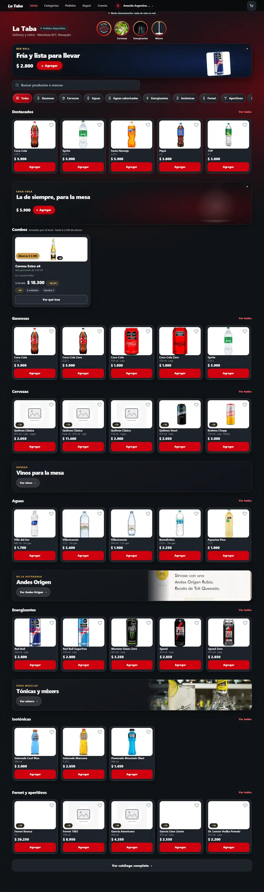
Inicio · teléfono 390 (página completa)
Mismo ritmo de tarjetas y chips que el catálogo.
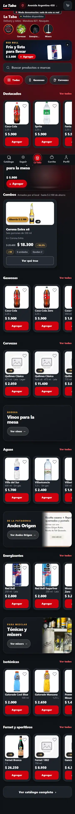
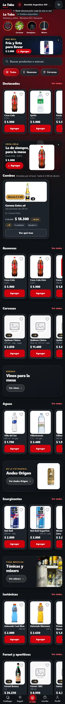